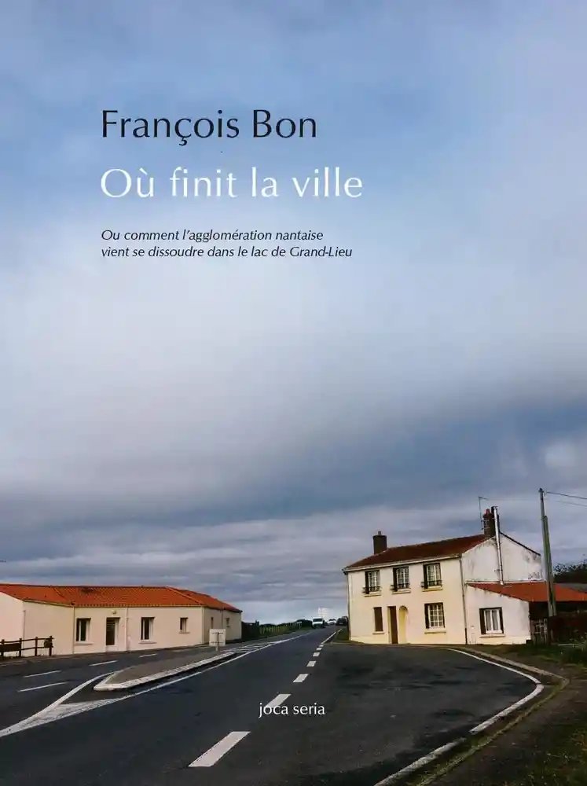

Où finit la ville
24 janvier 2021
J’ai lu le dernier livre de François Bon. Pas le plus récent, plusieurs dizaines, sans doute plusieurs centaines de livres de François Bon ont été imprimés entre aujourd’hui (novembre 2020) et la sortie de celui-ci le 3 septembre. Il a pour titre Où finit la ville, et est publié aux éditions Joca Seria, qui publient aussi de la poésie nord-américaine, mais après tout, François Bon connaît bien l’Amérique du Nord, surtout les États-Unis. Cela étant, ce livre ne parle pas de l’Amérique du Nord mais de Nantes, en France, ou plutôt des bords de Nantes. François Bon va à pied et en voiture, il décrit ce qui fait la ville ou bien cesse de la faire, le poids des toponymes, les juxtapositions incongrues d’objets, les bus interurbains, les zones industrielles. Le dernier livre de François Bon est bien un livre de François Bon.
C’est un livre élégant, fin, au format un peu carré, avec une belle couverture, imprimé sur une carte pelliculé rouge. Le papier de l’intérieur est sans prétention mais rend justice aux photos. Car il y a des photos, ce qui fait que le dernier livre de François Bon est aussi un nouveau livre de François Bon. Pas si nouveau, certes, pour ceux qui consultent le site de l’auteur tierslive.net ou qui l’ont croisé, à Cergy ou à Grand-Lieu, son Canon 5D et son trépied sous le bras.
L’auteur est en résidence à Grand-Lieu, un terme qu’il semble ne pas apprécier. Pourtant, il s’est attaché à vivre Grand-Lieu comme ses résidents : il a zoné de zones résidentielles en zones industrielles en zones commerciales. On a l’impression qu’il s’est senti un peu seul lorsqu’on regarde ces photos à l’asphalte toujours un peu humide.
Paraît-il qu’il s’agit du dernier livre de la collection « l’Esprit du Lieu », qui accueille les textes des écrivains en résidence à Grand-Lieu, après ceux de Virginie Gautier ou Hélène Gaudy, entre autres. En cela, c’est déjà un peu le dernier livre de François Bon.
Et puis on se dirait bien que c’est le dernier livre que l’auteur publie chez un éditeur. Ou plutôt, chez un autre éditeur que Tiers Livre, ce qui à la fois est différent et revient au même puisque c’est le dernier livre de François Bon dont il n’est pas lui-même l’éditeur. Non qu’il l’ait dit clairement, mais cela fait plusieurs années qu’il poursuit ce travail d’édition de ses propres textes chez Tiers Livre, alors on ne s’attendait pas à ce livre, si semblable à d’autres plus anciens (accueillis sous une couverture jaune à l’époque). Si semblable, parce qu’il explore, encore une fois, la ville, ce qui fait la ville en dehors d’elle-même ; et différent cependant, parce qu’il a un petit goût d’au revoir.

François Bon s’est dissout dans Internet, ce n’est pas une plaisanterie, comme Nantes se dissout dans Grand-Lieu. À la fin du livre, quelque part en pleine nuit vers la Zone d’Activités de Tournebride, l’auteur croise successivement : une usine d’encre d’imprimerie, le hangar des rotatives d’un grand quotidien régional, un data-center, un dépôt de palettes. Là, l’activité, l’information en train de se faire, de s’imprimer, les millions de gigas d’informations d’habitants de nos villes stockés et réfrigérés. Ce que dit l’auteur c’est que là, près du lac, tout ce dont nos villes actuelles ont besoin s’étend, les données des sites de vente en ligne, les cartons de nos livraisons à domicile, bref, un ensemble d’activité qui s’est déplacé, la ville hors de la ville.
François Bon a encore une fois un peu d’avance sur nous tous. Il a cessé de publier des livres, il est déjà à Grand-Lieu, stocké en palettes et en serveurs, prêt pour toutes les pandémies à venir. Ce n’est pas folie, seulement perspicacité, l’auteur s’est dissout dans Internet puisque la Ville en a déjà fait de même. Où finit la ville était son dernier livre avant la continuation de la littérature par d’autres moyens.
Peut-être qu’écrivain je devrais faire ça, pour me fixer à Grand-Lieu : reprendre un de ces entrepôts (ils ont vu grand), et dans leur « pépinière » qui sans doute a éclusé la taxe d’apprentissage des autres, il doit bien rester de la place… moi je logerais sur place, sur un des murs j’aurais des livres, tous mes livres, un local pour écrire et une scène pour roder ça vocalement, et tourner mes vidéos.
Voilà un livre, à la fois texte d’intervention et précis de géographie littéraire ; un dernier livre et un livre programmatique. La chaîne Youtube TiersLivre a dépassé le million de vues. C’était le dernier livre de François Bon, qu’il en vienne des milliers d’autres.